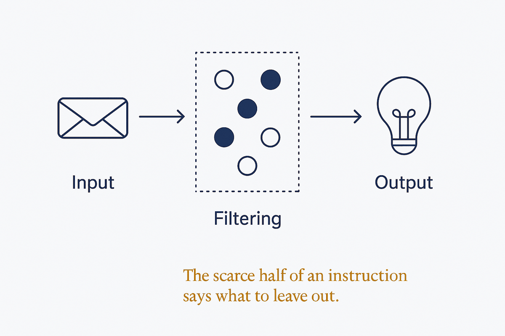

Most instructions say what to do. The scarce, valuable half says what to leave out — and that is what turns a dump into a briefing.

Instructions are written almost entirely as inclusions: do this, cover that, include the other. The result is output that is comprehensive and unusable — every angle present, nothing prioritised, the reader left to do the filtering that the system was supposed to do. A summary that omits nothing has not summarised.
Exclusion is the harder half to write because it requires a judgement you would rather defer. What is not worth my attention? Which recurring category of thing should never reach me? What counts as noise in this specific context? Answering forces you to commit, and the commitment is what makes the output sharp. A daily briefing is defined more by what it declines to mention than by what it includes.
The mechanism generalises beyond briefings. A skill that says which cases it does not handle is safer than one that implies universal competence. A retrieval policy that names disallowed sources is stronger than one that only lists allowed topics. A rule that says "never fake a result" prevents a specific, nameable failure — whereas "be accurate" prevents nothing, because it describes an aspiration rather than a boundary.
There is also a feedback loop available that almost nobody builds: track what you ignore. Every item you skip is a signal about your real filter, and feeding that back sharpens the exclusions over time. Most systems measure engagement with what they surfaced; measuring dismissal is how a filter learns the shape of your attention rather than the shape of its own guesses.